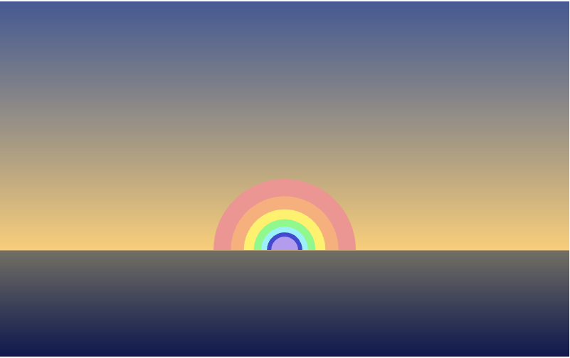
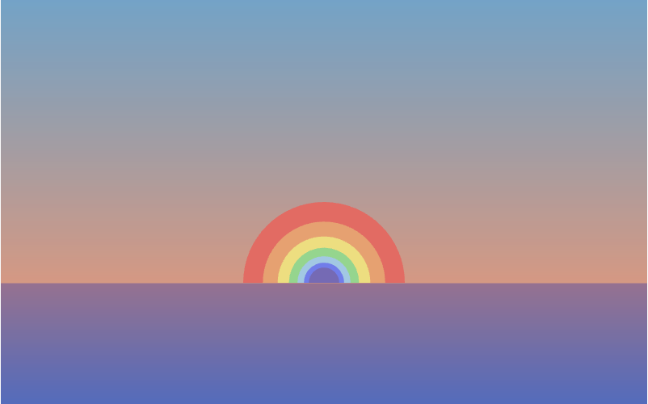

Creative Coding
A Bling Bling Cake
The inspiraton for this artwork comes from my mother's birthday party, the first celebration after my family moved to the UK. This artwork features an animated birthday card that includes a three-layer cake with different flavour and a candle. Additionally, the flame on the candle and decorations behind the cake illustrate the exciting atomsphere of the celebration.
Sunrise or Sunset? 
The inspiraton for this artwork comes from the sunset view I enjoyed with my friends in Hong Kong. This artwork features a dynamic rainbow appears at different times. During daylight hours, a sunrise version of the rainbow graces the scene, while a sunset version emerges when the sun goes down. The sun was replaced by a rainbow because, for me, the rainbow represents more hope.
Fantastic Night!
The inspiraton for this artwork comes from the beautiful cityscape of Hong Kong, the city where I come from. This artwork features a postcard design that utilizes 12 bright colours, sybolizing the multicultural nature of Hong Kong. The tallest building is The International Finance Center(IFC), one of the landmark in Hong Kong, and the Observation Wheel, located next to the Central Ferris Pier, is currently one of the popular places that many tourists visit. On 1st January,at the start of a new year(12am), there is a fireworks show across the Victoria Harbour, maiking it a spectacular event for both locals and tourists alike.